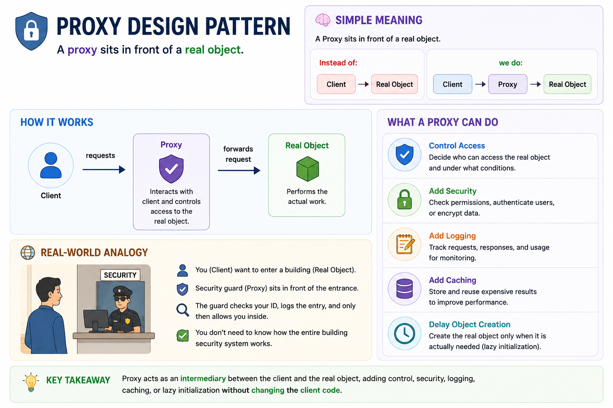
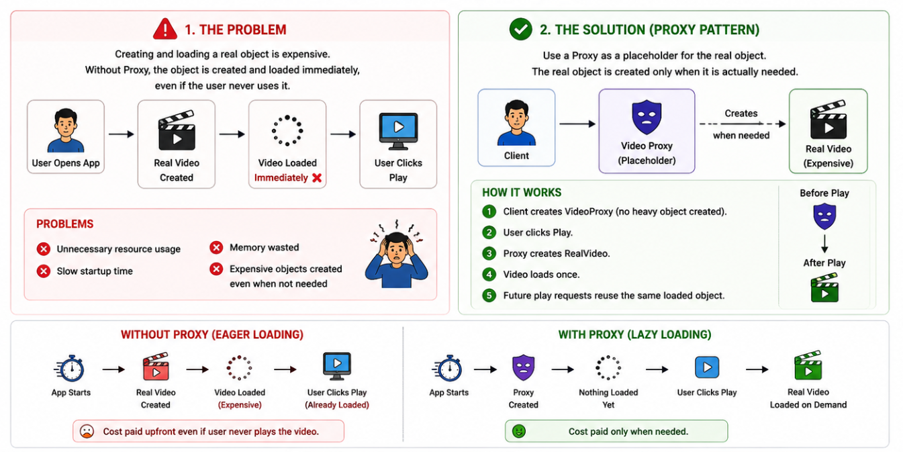
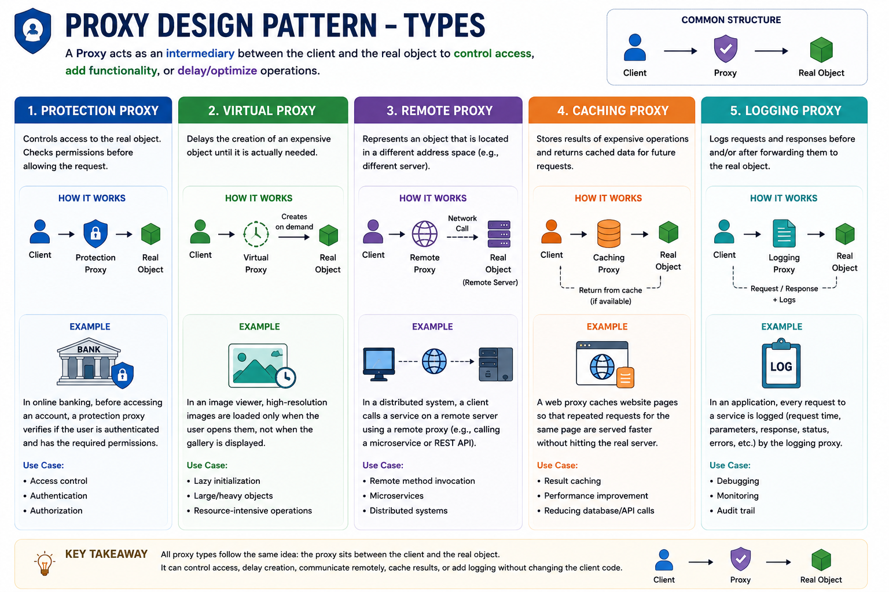
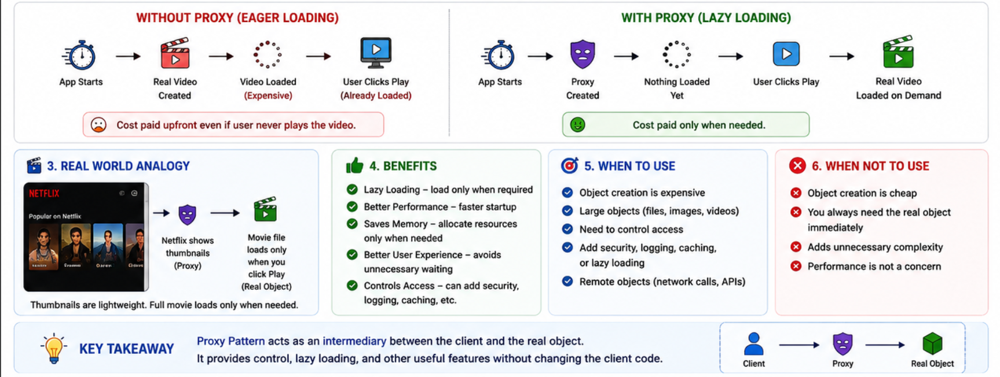

Proxy Design Pattern
Structural Design Pattern
🔷 Proxy Design Pattern
Learn how to provide a placeholder to control access to an object
🔷 Proxy Design Pattern
The Proxy Pattern is a Structural Design Pattern.
It states:
It provides a placeholder (middleman) for another object and
controls
access to that object.
In simple words:
Instead of talking directly to the real object, you talk to a Proxy.
🧠 Simple Meaning
A Proxy sits in front of a real object.

A proxy helps when you want to:
- Delay creation or loading until it's actually needed (lazy access).
- Restrict or control access (authentication, authorization, rate limiting).
- Add cross-cutting behavior like logging, caching, retries, or monitoring without changing the original class.
The proxy sits between the client and the real object, intercepting calls and deciding whether to forward them as-is, block them, or wrap them with extra behavior.
🚨 Problem
Suppose we have a video service.
Real Object
interface Video {
void play();
}
class RealVideo implements Video {
private String fileName;
public RealVideo(String fileName) {
this.fileName = fileName;
loadVideo();
}
private void loadVideo() {
System.out.println("Loading video: " + fileName);
}
public void play() {
System.out.println("Playing video: " + fileName);
}
}Without Proxy
public class Main {
public static void main(String[] args) {
Video video = new RealVideo("movie.mp4");
video.play();
}
}Output
Loading video: movie.mp4
Playing video: movie.mp4
Video loads immediately.
Problem Explanation:
Before the user even clicks Play, the system immediately:
- Loads the video file
- Allocates memory
- Opens resources
- Performs initialization
Even if the user never watches the video, the heavy object is already created.
❌ Expensive objects created even when not needed
✅ With Proxy
interface Video {
void play();
}Proxy Class
class VideoProxy implements Video {
private String fileName;
private RealVideo realVideo;
public VideoProxy(String fileName) {
this.fileName = fileName;
}
public void play() {
if(realVideo == null) {
realVideo = new RealVideo(fileName);
}
realVideo.play();
}
}Client
public class Main {
public static void main(String[] args) {
Video video = new VideoProxy("movie.mp4");
System.out.println("Video object created");
video.play();
video.play();
}
}Output
Video object created
Loading video: movie.mp4
Playing video: movie.mp4
Playing video: movie.mp4

Types of Proxy
1️⃣ Protection Proxy
Controls access to data based on roles.
Example:
- Admin
- Guest
- Manager
Check the diagram for other types of proxy

Example 2 : Protection Proxy
The application contains a Database that stores important employee and business information.
Requirements:
- ADMIN users can access the database.
- GUEST users should not access the database.
- Client code should not directly interact with the real database and perform permission checks everywhere.
Step 1: Common Interface
interface Database {
void accessDatabase();
}Step 2: Real Object (Real Database)
class RealDatabase implements Database {
public void accessDatabase() {
System.out.println("Accessing Database");
}
}Step 3: Proxy
class DatabaseProxy implements Database {
private String role;
private RealDatabase database;
public DatabaseProxy(String role) {
this.role = role;
database = new RealDatabase();
}
@Override
public void accessDatabase() {
if(role.equals("ADMIN")) {
database.accessDatabase();
}
else {
System.out.println("Access Denied");
}
}
}Client
public class Main {
public static void main(String[] args) {
Database db = new DatabaseProxy("ADMIN");
db.accessDatabase();
}
}Output:
Accessing Database
If:
Database db = new DatabaseProxy("GUEST");Output:
Access Denied
Explanation:
Protection Proxy is used when you want to control access to a real object based on permissions, roles, authentication, or authorization rules.
Instead of putting security checks everywhere, the proxy centralizes access control in one place.
Example 3 : Caching Proxy
Database Query Caching Proxy
The interface defines a simple query operation. The real implementation simulates a slow database. The caching proxy stores results and returns cached values for repeated queries.
import java.util.HashMap;
import java.util.Map;
interface DatabaseService {
String query(String sql);
}
class RealDatabaseService implements DatabaseService {
@Override
public String query(String sql) {
System.out.println("RealDatabase: Executing query: " + sql);
try {
Thread.sleep(100);
} catch (InterruptedException e) {
Thread.currentThread().interrupt();
}
return "Result for [" + sql + "]";
}
}
class CachingDatabaseProxy implements DatabaseService {
private RealDatabaseService realService;
private Map<String, String> cache = new HashMap<>();
public CachingDatabaseProxy() {
this.realService = new RealDatabaseService();
}
@Override
public String query(String sql) {
if (cache.containsKey(sql)) {
System.out.println("CachingProxy: Cache HIT for: " + sql);
return cache.get(sql);
}
System.out.println("CachingProxy: Cache MISS for: " + sql);
String result = realService.query(sql);
cache.put(sql, result);
return result;
}
public void clearCache() {
System.out.println("CachingProxy: Cache cleared.");
cache.clear();
}
}
public class DatabaseCacheDemo {
public static void main(String[] args) {
CachingDatabaseProxy db = new CachingDatabaseProxy();
System.out.println("--- First query (cache miss) ---");
System.out.println(db.query("SELECT * FROM users"));
System.out.println("\n--- Same query again (cache hit) ---");
System.out.println(db.query("SELECT * FROM users"));
System.out.println("\n--- Different query (cache miss) ---");
System.out.println(db.query("SELECT * FROM orders WHERE status = 'pending'"));
System.out.println("\n--- Clear cache and retry ---");
db.clearCache();
System.out.println(db.query("SELECT * FROM users"));
}
}Explanation:
The first query takes a full 100 milliseconds (simulated database latency). The identical second query returns instantly from cache. After clearing the cache, the same query hits the database again. The client code uses the same DatabaseService interface throughout, unaware that caching is happening behind the scenes.
4. When To Use
Use Proxy when:
1. Access Control Needed
- Admin Permissions
- Authorization
2. Expensive Object Creation
- Large Files
- Large Images
3. Caching Needed
- API Responses
- Database
4. Logging / Monitoring Needed
- Audit Logs
- Tracking
5. Remote Objects
- Remote Server
- Microservices
5. When NOT To Use
❌ No access control needed.
❌ No logging/caching/security required.
❌ Direct access to object is acceptable.
❌ Don't use Proxy in Small Applications
Adding proxy becomes unnecessary complexity.
6. Real World Examples
Spring AOP
Many features in Spring Framework use proxies.
Example:
@TransactionalInternally Spring creates a proxy.
Hibernate
Lazy loading entities.
User user = repository.findById(1);Data may load later through a proxy.
API Gateway
Client
↓
API Gateway
↓
Microservices
API Gateway acts like a proxy.
Security Systems
User
↓
Authentication Layer
↓
Resource
Classic proxy.
Memory Trick
The easiest way to remember:
Decorator = Add new functionality
Proxy = Control access to functionality
💪 Practice Exercise
For practice check out this:
Ready to practice? Try this hands-on exercise to reinforce your understanding of Proxy Design Pattern:
Start Exercise on AlgoMaster🎯 Summary
Proxy Pattern is a Structural Design Pattern that provides a placeholder for another object to control access to it.
The proxy implements the same interface as the real object and can add security, logging, caching, lazy initialization, or remote access behavior before delegating requests to the actual object.
It is widely used in Spring AOP, Hibernate lazy loading, security systems, caching layers, and API gateways.
